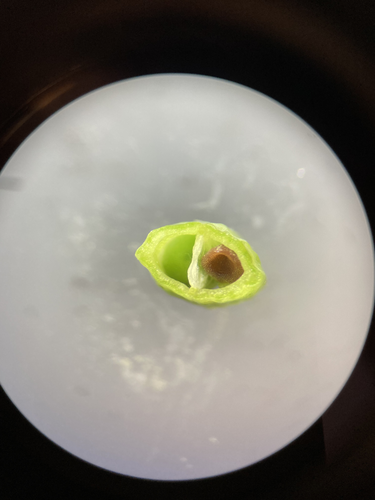
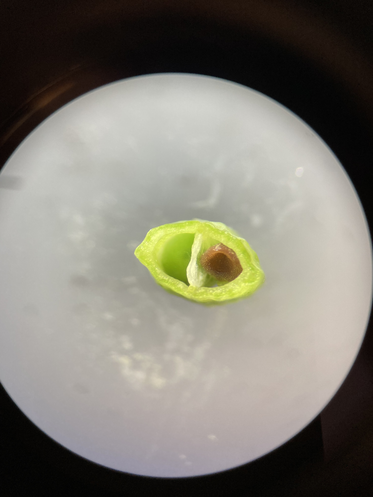

Lab 5: Brassicaceae, Malvaceae, Ericaceae, and intro to phylogenetics
Evan Hersh
27 August, 2020
Brassicaceae - Mustard family
1. Herbs.
2. Leaves simple, pinnatifid, or pinnately compound, alternate, without stipulates.
3. Flowers perfect, cruciform (cross or X shaped). Sepals 4, free. Petals 4, free, clawed. Stamens 6 and tetradynamous (the 2 outer stamens shorter than the 4 inner stamens). Pistil compound, ovary superior, carpels 2, placentation parietal.
4. Fruit a silique or silicle.
5. About 350 genera and 3,000 species, primarily North Temperate.

Brassicaceae is the 4th largest family in B.C., with 169 species and varieties. The family is very important economically, providing cabbage, broccoli, cauliflower (all species or varieties of Brassica), mustard, turnips, rapeseed or canola, radish (Raphanus), horseradish (Amoracia rusticana), and watercress (Rorippa). Numerous genera are cultivated as ornamentals, including Lobularia (sweet alyssum), Matthiola (stocks), and Aubrieta.
Brassicaceae flowers are very characteristic, making it easy to identify to family. The genera and species are more difficult however, and often require ripe fruit and sometimes a microscope to examine minute trichome structure. Let’s look at some flowers. Below you can see the typical ‘cruciform’ (cross-like) structure of the petals, and ‘tetradynamous’ stamens.


The petals typically have a narrow “claw” at the base, with the “blade” bending outwards at the throat of the corolla.


As mentioned above, much of the Brassicaceae key is concerned with the fruits. The family has two unique fruit types, siliques and silicles. Siliques are more the twice as long as they are wide (appearing long and narrow), while silicles are less than two times as long as wide (appearing short and wide in comparison). Can you identify which is which from the photos below?


Siliques and silicles are dehiscent fruit from a 2-carpellate, 2-loculed ovary. The two carpels (or valves) split away from a central structure called a “replum”, which is a thin, often papery/translucent plane that sits in between the two valves like a wall. These fruit are typically flattened in two different ways: if the fruit is flattened parallel to the replum (so that the replum is rather wide) we refer to that as “compressed”, and if the fruit is flattened perpendicular to the replum (so that the replum is quite thin) we call that “obcompressed”. See if you can identify the two valves, replum, and the type of compression in the fruit below.


 

Brassicaceae leaves can be simple or compound, and are arranged alternatively and without stipules. Many leaves are pinnately compound or “pinnatifid”, which are pinnately divided or lobes but not all the way to the midrib of the leaf.

Another important characteristic for identification is trichomes, which can be quite complex and varied in the Brassicaceae. A stunning example of intricate trichome morphology is displayed in the genus Draba (Evan’s personal favorite genus!!!), a hyper-diverse group that are typically only found in alpine areas. Draba (amongst many other members of Brassicaceae) have particular trichome patterns that can be useful (and sometimes necessary) to identify identify individual species. Can you identify different types of trichomes in the two Draba species below?


Malvaceae - Mallow family

Ericaceae - Heath family